Stopnie harcerskie
Stopnie ZHP
Oznaczenia na krzyżu: |
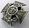 | 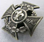 | 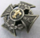 | 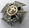 | 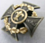 | |
Oznaczenia na naramiennikach: |
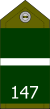 | 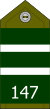 | 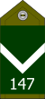 | 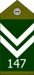 | 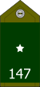 | 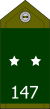 |
Oznaczenia na patkach w drużynach wodnych: |
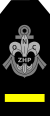 | 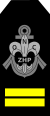 | 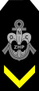 | 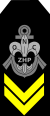 | 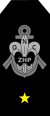 | 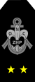 |
Nazwa stopnia - chłopcy: |
młodzik |
wywiadowca |
odkrywca |
ćwik |
harcerz orli |
harcerz |
Nazwa stopnia - dziewczęta: |
ochotniczka |
tropicielka |
pionierka |
samarytanka |
harcerka |
harcerka |